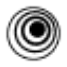

LalaLand AIАватары
«LalaLand AI» создаёт портретные и аватарные изображения.
Раздел «Изображение → изображение»: варианты ИИ для этой задачи, описания возможностей и переходы к обзорам. Сравните несколько решений на одинаковом примере.
Создайте стилизованный вариант собственной фотографии для творческого проекта. Укажите технику и палитру, а также обязательные детали исходника; сравните положение персонажа, крупные предметы и композицию, чтобы стиль не заменил основной сюжет новой сценой.
Преобразуй мою фотографию прогулки в книжную акварельную иллюстрацию: мягкая охристая палитра, лёгкая бумажная фактура. Сохрани позу человека, форму зонта и расположение дорожки, без дополнительных персонажей.
«LalaLand AI» создаёт портретные и аватарные изображения.
«Palette» представлен в разделе «Изображения». При выборе проверьте нужную операцию и условия работы с результатом.
Сравнивать «Petalica Paint» с другими инструментами раздела «Редактировать изображение» удобнее на одинаковом исходном материале.
Сравнивать «QRCraft» с другими инструментами раздела «Генерация изображений» удобнее на одинаковом исходном материале.
«Remover ZMO AI» убирает выбранные объекты из визуального материала. «Remover ZMO AI» помогает исправлять и оформлять фотографии.
«ThePetPainting» представлен в разделе «Генерация изображений». При выборе проверьте нужную операцию и условия работы с результатом.
«Unfake» представлен в разделе «Редактировать изображение». При выборе проверьте нужную операцию и условия работы с результатом.
Upscale.media увеличивает изображения с помощью ИИ и автоматизирует эту обработку. Набор также ориентирован на массовую подготовку цифровых материалов. Основной сценарий связан с получением более крупной версии исходника; при сравнении результата стоит проверять мелкие детали, чтобы увеличение размера не воспринималось как подтверждение неизвестного содержимого снимка.
Для «aigf» сначала определите свою задачу и требуемый результат. Карточка относится к направлению «Генерация изображений».
Aiphoria.io преобразует исходные фотографии средствами ИИ и предлагает выбор оформления. Пользователь задаёт стиль, после чего получает новый вариант снимка. Визуальное направление связано с фотореалистичной подачей: сервис сочетает работу с уже существующим изображением и применение выбранной манеры для подготовки его другого представления.
«ArchitectGPT» помогает представить оформление помещения.
«Bg.Eraser» отделяет объект от фона изображения. «Bg.Eraser» убирает выбранные объекты из визуального материала.
«DecorAI» помогает представить оформление помещения.
«DecorAI.xyz» помогает представить оформление помещения.
Для «DreamzAR AI Landscape Design» сначала определите свою задачу и требуемый результат. Карточка относится к направлению «Дизайн интерьера».
Сравнивать «FaceMeme» с другими инструментами раздела «Редактировать изображение» удобнее на одинаковом исходном материале.
Сравнивать «facetomany (facetomany.com)» с другими инструментами раздела «Редактировать изображение» удобнее на одинаковом исходном материале.
Genroom создаёт варианты оформления интерьера, фасада или двора на основе фотографии. Пользователь выбирает стилевое направление и получает реалистичную визуализацию изменений. При разборе результата следует сопоставлять планировку, окна и двери с исходником, рассматривая картинку как вариант образа, а не подтверждённый технический проект пространства.
«Glitch Image Generator» готовит визуальные материалы по заданию.
«HomestylerAI» помогает представить оформление помещения.
Для «HomeVisualizer AI» сначала определите свою задачу и требуемый результат. Карточка относится к направлению «Дизайн».
«Image AI App» отделяет объект от фона изображения. «Image AI App» готовит визуальные материалы по заданию.
«Imagine Me» готовит визуальные материалы по заданию.
«iSamur» меняет лицо в визуальном материале.
Сравнивать «Kolorize» с другими инструментами раздела «Редактировать изображение» удобнее на одинаковом исходном материале.

В инструменте «Magic Studio» можно получать изображения из словесного задания. Ещё одно направление работы: менять фотографии с учётом выбранного оформления.
«Pica AI» меняет лицо в визуальном материале.
Pingvin AI превращает селфи в художественные портреты и цифровые аватары. После загрузки фотографии пользователь выбирает визуальный стиль и получает переработанное изображение. Российский сервис представлен через Telegram-бота и веб-страницу, а работа с интерфейсом организована на русском языке.
«Pirate Diffusion» готовит визуальные материалы по заданию. «Pirate Diffusion» создаёт портретные и аватарные изображения.
«PS2 AI Filter» представлен в разделе «Дизайн». При выборе проверьте нужную операцию и условия работы с результатом.
restorePhotos.Pro AI обрабатывает старые фотографии с помощью ИИ. Доступные функции включают восстановление изображения, добавление цвета, увеличение и уменьшение искажений. Инструмент предназначен для изменения сохранённого снимка, объединяя работу с повреждениями и визуальным качеством в одном наборе операций по восстановлению фотографии.
«SDXL Auto FaceSwap» меняет лицо в визуальном материале.
Сравнивать «spatia» с другими инструментами раздела «Дизайн интерьера» удобнее на одинаковом исходном материале.
«Thing Translator» помогает перенести содержание на другой язык.

AI Fashion Models от insMind создаёт изображения одежды и аксессуаров на цифровых моделях. Для представления товара используются разные стили, оттенки кожи и варианты телосложения. Инструмент предназначен для визуального оформления ассортимента онлайн-магазина, когда образ модели формируется средствами ИИ вместо отдельной съёмки человека.
Сравнивать «AI HD Anime» с другими инструментами раздела «Аниме» удобнее на одинаковом исходном материале.
«AI Powered Image Upscaler» увеличивает изображения для дальнейшей обработки.
«Alter AI (getalter.ai)» представлен в разделе «Дизайн». При выборе проверьте нужную операцию и условия работы с результатом.
«Anime AI (animeai.app)» добавляет движение исходной картинке. «Anime AI (animeai.app)» также готовит визуальные материалы по заданию.
Сравнивать «ArchiVinci» с другими инструментами раздела «Генерация изображений» удобнее на одинаковом исходном материале.
Сравнивать «Artadum» с другими инструментами раздела «Генерация изображений» удобнее на одинаковом исходном материале.
Сравнивать «Artius» с другими инструментами раздела «Генерация изображений» удобнее на одинаковом исходном материале.
«CodeFormer» помогает исправлять и оформлять фотографии.
Сравнивать «ControlNet» с другими инструментами раздела «Изображения» удобнее на одинаковом исходном материале.
Для «Dopepics» сначала определите свою задачу и требуемый результат. Карточка относится к направлению «Изображения».
Getalpaca добавляет ИИ-инструменты проектирования в Photoshop через плагин. Предусмотрены обучение собственных моделей и создание изображений. Продукт связывает генеративный процесс с привычной средой работы над графикой, где подготовленный визуальный материал можно рассматривать в контексте редакторского проекта, а не только как отдельный результат внешнего текстового запроса.
«Hama» убирает выбранные объекты из визуального материала.
Сравнивать «Instanice» с другими инструментами раздела «Редактировать изображение» удобнее на одинаковом исходном материале.
Страница 5 из 7